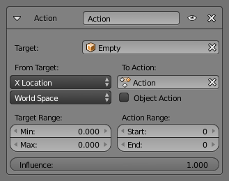

Action Constraint 动作关系约束¶
动作关系 约束是非常强大的。它允许你使用另一个物体的变换控制 动作 。
动作关系 约束的基本思想非常类似于 驱动 ，只是前者使用于整个动作（即一堆相同类型的 F 曲线），而后者则控制“自身”的单一F曲线…
请注意，即使该约束接受 网格 操作类型，但只有 物体 ， 姿势 和 约束 类型才会真正的工作（起作用），因为约束只能影响物体或骨骼的变换属性，而不能影响网格的形状。还要注意，只有物体变换（位置、旋转、缩放）受动作影响，如果动作包含其他关键帧属性它们将会被忽略的，作为约束不会影响那些属性。
作为一个例子，让我们假设你已经定义了一个 物体 动作（它可以被指定给任何物体，甚至不指定物体），并通过 行动 约束已映射到你的自身，使目标在（0.0到2.0）范围内沿着它的X轴映射动作内容在其自身（0到100）帧范围内移动。这将意味着当目标的 X 属性为0.0时，自身将如同在链接动作的第0帧中一样;目标的 X 属性为1.0，自身将如同在链接动作的第50帧中一样。
Options 选项¶

动作关系面板。
- Target 目标
- 数据ID 用于选择约束目标， 当它为无（none）时不起作用（红色状态）。
- Bone 骨骼
- 当目标是骨架物体时，请使用此字段来选择目标骨骼。
- Transform Channel 形变通道
- 该选择控件选择从目标使用“动作驱动”的哪个变换属性（沿/围绕它那个轴位置，旋转或缩放）。
- Target Space 目标空间
- 此约束允许您选择在哪个空间计算其目标的变换属性。
- To Action 到动作
选择要使用的动作的名称。
Warning
尽管它可能不处于红色状态（UI刷新问题），但当该字段不包含有效的动作时，此约束显然不起作用。
- Object Action 物体动作
- 当它启用时 仅仅 用于骨骼，此选项将使受约束的骨骼使用链接动作的“物体”部分，而不是“同样命名的姿势”部分。这允许你将物体的动作用应用于骨骼。
- Target Range Min/Max 目标范围
驱动变换属性值的下限和上限。
Warning
不幸的是，我们再次发现约束局限性：
- 当使用旋转属性作为"驱动"，这些值"重新映射"到(180.0 到-180.0) 的范围。
- 当使用缩放属性作为"驱动"，这些值被限制为null或正值。
- Action Range Start/End 动作范围
要映射的动作的开始和结束帧。
Note
- 这些值必须严格正数。
- 这两个值默认为0，即禁用映射（即自身只获取在链接动作的第0帧定义的属性...）。
Notes 注意¶
- 当链接的动作影响某些位置属性时，将自身的现有位置添加到此约束的计算结果中就如 复制位置约束 启用 Offset偏移量 那样】。
- 当链接的动作影响某些缩放属性时，自身的现有缩放乘以此约束的计算结果。
- 当链接动作影响某些旋转属性时，自身的现有旋转将被此约束的计算结果所覆盖。
- 与通常不同的是，你可以有 Start 值高于 End 值，或者 Min 高于 Max 值：这将反转动作的映射（即将“播放”反转...），除非你们两套都显然颠倒了！
- 当使用 约束 动作时，它是约束 通道 名称，用来决定自身的哪些约束应用于该动作。例如，如果你有一个约束通道命名为“trackto_empt1”，其键 影响 或 起始/结束 值（唯一可以键入的）将被映射到的自身的约束命名为“trackto_empt1”那一个。
- 同样，当使用 Pose（姿势） 动作时（这显然当它约束骨骼时才有意义和能够工作！），它是用来确定那一个来自动作的骨骼 channel's names（通道名） 被使用。（例如，如果受约束的骨骼被命名为“手臂（arm）”，它将使用并且仅使用名为“手臂（arm）”的动作的骨骼通道...）。不幸的是，在整个骨架对象上使用 Pose 动作（一次影响动作中的所有关键骨骼）将不起作用...
- 请注意，你可以使用 姿态库功能 创建/编辑 Pose（姿势） 动作数据块…只要记住，在这种情况下，每帧有一个姿势！